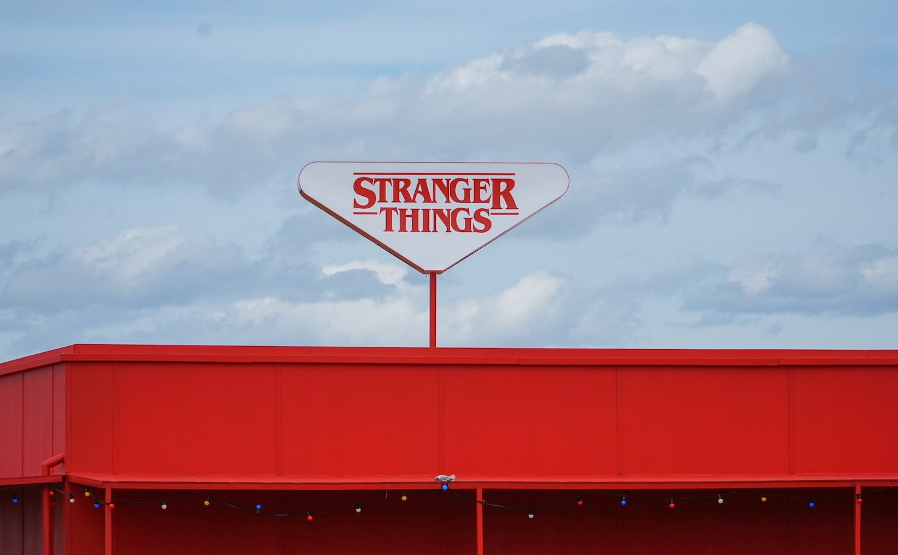

Sinopsis
En Hawkins, Indiana, la desaparición de un niño desata una serie de eventos sobrenaturales cuando aparece una niña con poderes extraordinarios.

Locación y Estudio
Filmada principalmente en Georgia, EE.UU., con escenas emblemáticas en los bosques y la escuela de Hawkins.
Creadores y Equipo
- Hermanos Duffer - Creadores y guionistas
- Shawn Levy - Productor ejecutivo
- Kathleen Sandino - Productora
Audio: Tema Principal de Stranger Things
Dale play y sumergite en el universo de Stranger Things con su música original.